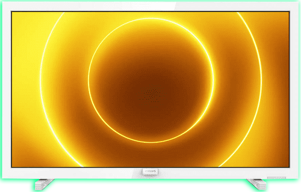

Televízory
SAMSUNG UE65TU7092 (2020)
Cena:179,00€
Parametre:
- Typ obrazovky: LED
- Typ rozlíšenia: 4K Ultra HD
Varianty (uhlopriečky"):
Podrobný popis:
Ultratenký Smart LED televízor Samsung UE65TU7092UXXH vás vtiahne do sveta neuveriteľne dokonalého obrazu a realistických farieb, ktoré sprostredkuje obrazovka so 65“ (163 cm) uhlopriečkou v spolupráci so skvelým 4K rozlíšením (3840 × 2160), inteligentným čipom Crystal Processor 4K (optimalizuje farebnosť a kontrast) a Crystal displejom. Špecifikom je technológia HDR (vysoký dynamický rozsah), ktorá zvýši svietivosť televízora a tým aj jeho farebné spektrum, herný režim, ktorý optimalizuje obraz a znižuje vstupné oneskorenie, či vzdialený prístup, ktorý umožňuje bezdrôtovo zrkadliť displej vášho počítača priamo na obrazovku. S určitosťou poteší elegantné riešenie Clean Cable, ktoré udrží všetky vaše káble úhľadne ukryté priamo v stojane.
THOMSON 32HD3306
Cena:219,00€179,00€
Parametre:
- Typ obrazovky: LED
- Typ rozlíšenia: Full HD
Podrobný popis:
Kompaktný LED televízor Thomson 40FD3306 v čiernej farbe ponúka 40“ uhlopriečku (102 cm) a čistý obraz vo Full HD rozlíšení (1920 x 1080), vďaka ktorému si môžete pozrieť svoje obľúbené filmy či relácie v skvelej kvalite. Vstavané reproduktory disponujú výkonom 2 x 8 W a zariadenie podporuje typy signálov DVB-C, DVB-T2 či DVB-S2. K dispozícii je dvojica HDMI portov, USB port 2.0, dvojica RF vstupov a kompozitný video vstup. Tomuto modelu nechýba ani rozhranie CI a výstup pre slúchadlá. Pýši sa hĺbkou farieb 8 Bitov a programovým sprievodcom EPG. Podporuje VESA štandard 100 x 100.
SONY KD-43XH8096
 Cena:799,00€529,00€
Parametre:
Cena:799,00€529,00€
Parametre:
- Typ obrazovky: LED
- Typ rozlíšenia: 4K Ultra HD
Varianty (uhlopriečky"):
Podrobný popis:
Dizajnový Smart televízor Sony KD-43XH8096 v čiernom prevedení s konštrukciou s úzkym rámom a štíhlym stojanom elegantne zapasuje do každej modernej domácnosti a svojim užívateľom ponúkne 43“ (108 cm) uhlopriečku s rozlíšením 4K Ultra HD (3840 x 2160). Pre lepší zážitok zo sledovania obľúbených filmov či relácií poslúži kombinácia technológie 4K X-Reality PRO (zvýšenie rozlíšenia 4K), systému Android TV a živého displeja Triluminos (jasné a realistické farby). Vďaka technológii Dolby Atmos si vychutnáte podmanivý priestorový zvuk. Zariadenie podporuje viaceré inovatívne technológie – Bluetooth, Motionflow, Google Play, Apple AirPlay, Chromecast či Clear Phase. Pokročilé hlasové ovládanie poskytne širokú škálu možnej zábavy. Súčasťou balenia je inteligentný diaľkový ovládač.
PHILIPS 24PFS5535/12

Cena:199,00€179,00€
Parametre:
- Typ obrazovky: LED
- Typ rozlíšenia: Full HD
Podrobný popis:
Kompaktný LED televízor Philips 24PFS5535/12 v bielom farebnom prevedení s tenkým dizajnom dokonale zapadne do menších priestorov v vašej domácnosti, ale poľahky si ho budete môcť zobrať aj na výlet karavanom vďaka 12 V vstupu. Ponúka Full HD rozlíšenie (1920 x 1080) s uhlopriečkou 24“ (60 cm), ktoré doplní čistý zvuk plynúci z dvoch reproduktorov s celkovým výkonom 6 W. Špecifikom je technológia Pixel Plus HD, ktorá optimalizuje kvalitu obrazu pre krásnu ostrosť a skvelý kontrast s jasnejšou bielou a hlbšou čiernou. Zariadenie obsahuje dvojicu HDMI vstupov, VGA, CI+, digitálny optický audiovýstup, DVI (vstup zvuku) či konektor pre slúchadlá a na zapojenie USB kľúča, digitálneho fotoaparátu či mp3 prehrávača poslúži praktický USB port.
ORAVA LT-1018
Cena:329,00€219,00€
Parametre:
- Typ obrazovky: LED
- Typ rozlíšenia: HD
Podrobný popis:
Televízor ORAVA LT-1018 v praktickom prevedení je vybavený LED obrazovkou s uhlopriečkou 39" (99 cm) a WXGA rozlíšením 1366 x 768 pixelov. Disponuje USB vstupom, HDMI, SCART, konektorom VGA a výstupom na pripojenie slúchadiel. Na príjem televízneho signálu využíva zabudovaný tuner DVB-T/C a DVB-T2 (H265). Príjemnou vlastnosťou tohto televízora je hotelový mód, rodičovský zámok či automatické vypnutie. O hudobný zážitok sa postarajú dva stereo reproduktory s výstupným zvukovým výkonom 2 x 8 W.
Všetky autorské práva sú vyhradené ©Damián Jaroš/CGP/II.B